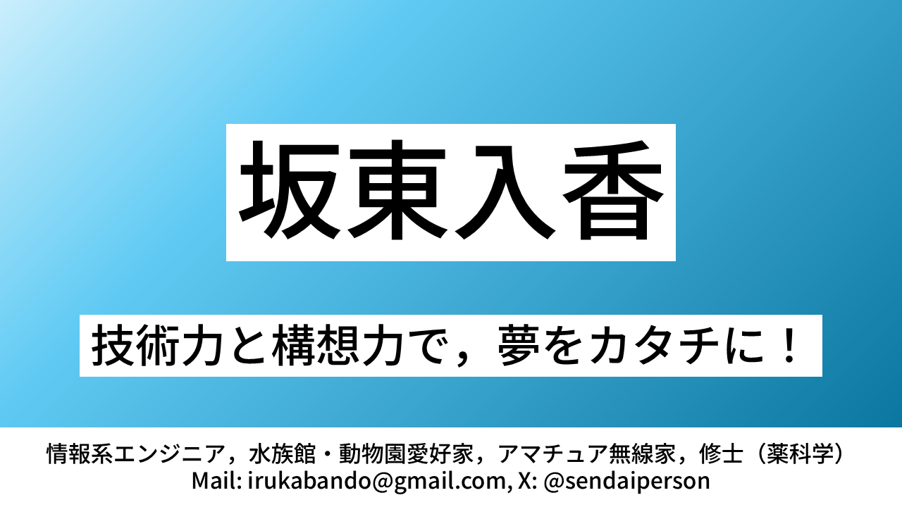

海洋生物コラム開始のお知らせ
投稿者: 坂東入香
1. コラム配信のスタートにあたって
私が海洋生物へ興味を持ったきっかけは，大学時代に訪れた大学近辺の水族館で，イルカショーを観覧したことです。
大学では全く別の分野を専攻しており，これまで海はただの景色にすぎず，そこに生息する生物に思いを馳せたこともありませんでした。
しかし，イルカショーでのイルカの身体能力，認知能力，社会性，さらにはさまざまな展示を見る中で感じた海洋生物が織りなす生命の神秘さに感動し，海洋生物について興味を持ちました。
「この生き物たちをもっと知りたい」という気持ちに突き動かされるまま，独学で海洋生物の世界へ飛び込むことにしました。
私はこの分野において，個人的な興味関心を持ったあくまで初心者です。
だからこそ，専門書や一般書を片手に，知らなかったことを知る過程の楽しさを，皆さんと等身大の目線で共有したいと考えています。
本コラムでは，参考文献（海洋生物，一般生物，一般地学，それらの関連分野）のトピックを素材にし，海洋生物やその関連分野の記事を配信します。
読者の皆様と一緒に，一冊の書籍を読み進めるような，「学びの伴走者」となれる配信を目指します。
2. 今後の配信予定について
本コラムは以下のスタイルで運営していく予定です。
- 配信頻度：不定期更新（最低でも月に2本の配信を目標にします）
- 内容：海洋生物，一般生物，一般地学，それらの関連分野
- こだわり：必ず参考文献を明記し，興味を持った方がさらに深く学べるきっかけを作ります
コラムは，本アプリでのみの配信です。他の媒体からは，基本的に閲覧できません。
よろしければ，お手元に参考文献の書籍を用意した上で，コラムを読んでいただければ幸いです。
皆様と一緒に，深く美しい海の世界を探求できることを楽しみにしています！
3. 投稿者紹介
坂東入香
水族館・動物園愛好家，アマチュア無線家，情報系エンジニア，個人開発者，修士（薬科学）

4. 参考文献
- 植草康浩（2025）『イルカの時間 イラストと科学で巡る旅』学窓社
- 田島木綿子ほか（2021）『海棲哺乳類大全 彼らの体と生き方に迫る』緑書房
- 植草康浩ほか（2019）『鯨類の骨学』緑書房
- 粕谷俊雄（2019）『イルカ概論 日本近海産小型鯨類の生態と保全』東京大学出版会
- 村山司（2008）『鯨類学』東海大学出版会
- 村山司（2021）『シャチ学』東海教育研究所
- 岩井保（2005）『魚学入門』恒星社厚生閣
- 猿渡敏郎ほか（2016）『生きざまの魚類学 魚の一生を科学する』東海大学出版部
- 松浦啓一（2009）『動物分類学』東京大学出版会
- 村山司ほか（2025）『海獣水族館の素顔』東海教育研究所
- 鈴木克美（2005）『水族館学 水族館の望ましい姿の発展のために』東海大学出版会
- 中島慶二ほか（2022）『いきもの六法 日本の自然』山と渓谷社
- 松島俊也ほか（2021）『オールコック・ルーベンスタイン動物行動学 原書11版』丸善出版
- デイヴィッド・サダヴァほか（2020）『カラー図解 アメリカ版 新・大学生物学の教科書 第１巻 細胞生物学』講談社
- デイヴィッド・サダヴァほか（2021）『カラー図解 アメリカ版 新・大学生物学の教科書 第２巻 分子遺伝学』講談社
- デイヴィッド・サダヴァほか（2021）『カラー図解 アメリカ版 新・大学生物学の教科書 第３巻 生化学・分子生物学』講談社
- ジョン・グロツィンガーほか（2025）『カラー図解 アメリカ版 大学地球科学の教科書 固体地球編（上）プレートテクトニクス・鉱物と岩石・火成岩・火山』講談社
- ジョン・グロツィンガーほか（2025）『カラー図解 アメリカ版 大学地球科学の教科書 固体地球編（下）堆積・変成・変形・放射年代測定・地震・地球の内部構造』講談社
- 水口博也（2023）『シャチ生態ビジュアル百科 第2版』誠文堂新光社